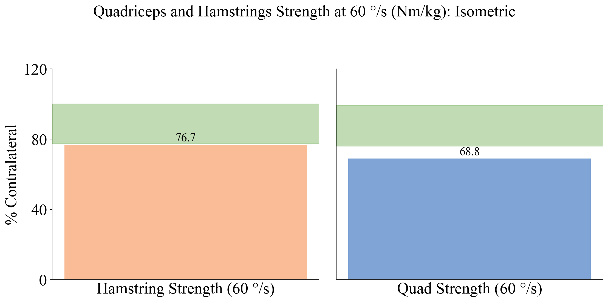

#import libraries
import matplotlib.pyplot as plt
import numpy as np
import pandas as pd
import seaborn as sns
from matplotlib import rcParams
import warnings
warnings.filterwarnings("ignore")Data Visualizations
#Load in cleaned data
data = pd.read_csv('./ACLR_data.csv')#Getting an interest patient for example chart
interest_patient = data[data['record_id'] == 1473]interest_patient.head()
print(interest_patient['lsi_ext_mvic_60'])2058 53.78
2059 68.81
2060 70.27
Name: lsi_ext_mvic_60, dtype: float642058 53.78
2059 68.81
2060 70.27
Name: lsi_ext_mvic_60, dtype: float64average_acl_rsi_per_visit = data.groupby('tss_dashboard')['acl_rsi'].mean()
print('Mean ACL RSI at Visit:', average_acl_rsi_per_visit)
iqr_per_time = {}
for time in average_acl_rsi_per_visit.index:
time_data = data[data['tss_dashboard'] == time]['acl_rsi'].dropna()
q1 = time_data.quantile(0.25)
q3 = time_data.quantile(0.75)
iqr_per_time[time] = q3 - q1
print("IQR for each time period:", iqr_per_time)
q1_acl_rsi = data['acl_rsi'].quantile(0.25)
q3_acl_rsi = data['acl_rsi'].quantile(0.75)
iqr_acl_rsi = q3_acl_rsi - q1_acl_rsi
print(f"IQR for ACL RSI: {iqr_acl_rsi}")Mean ACL RSI at Visit: tss_dashboard
13 to 24 months 67.849391
3 to 4 months 57.920182
5 to 7 months 70.263743
8 to 12 months 76.423492
Not Reported 60.345864
Preoperative NaN
Name: acl_rsi, dtype: float64
IQR for each time period: {'13 to 24 months': 37.285, '3 to 4 months': 35.0, '5 to 7 months': 33.3, '8 to 12 months': 31.975, 'Not Reported': 37.7225, 'Preoperative': nan}
IQR for ACL RSI: 36.67Mean ACL RSI at Visit: tss_dashboard
13 to 24 months 67.849391
3 to 4 months 57.920182
5 to 7 months 70.263743
8 to 12 months 76.423492
Not Reported 60.345864
Preoperative NaN
Name: acl_rsi, dtype: float64
IQR for each time period: {'13 to 24 months': 37.285, '3 to 4 months': 35.0, '5 to 7 months': 33.3, '8 to 12 months': 31.975, 'Not Reported': 37.7225, 'Preoperative': nan}
IQR for ACL RSI: 36.67#Set font and font size
rcParams['font.family'] = 'Times New Roman'
rcParams['font.size'] = 22
#Data (calculated above)
rsi_means = [57.920182, 70.263743, 76.423492]
tss_dashboard = ['3-4 months', '5-7 months', '8-12 months']
iqr_values = [35.0, 33.3, 31.975]
#Creating figure
plt.figure(figsize=(8, 8))
#Calculating the upper and lower bounds for shading
upper_bounds = [mean + iqr / 2 for mean, iqr in zip(rsi_means, iqr_values)]
lower_bounds = [mean - iqr / 2 for mean, iqr in zip(rsi_means, iqr_values)]
#Shade the IQR regions to show the patient where they are + where they should be aiming to be
plt.fill_between(tss_dashboard, lower_bounds, upper_bounds, color='green', alpha=0.2, label='IQR')
#Plotting RSI means
plt.plot(
tss_dashboard,
rsi_means,
marker='o',
markersize=10,
linestyle='-',
linewidth=2,
color=(65/255, 105/255, 225/255, 0.5)
)
#Annotating and labeling each point that shows the mean RSI score for patient's overtime
for tss, th in zip(tss_dashboard, rsi_means):
plt.text(tss, th + 1.5, f'{th:.1f}', ha='center', fontsize=20)
#Point with patient's RSI score at this visit in correct time bin
plt.scatter('5-7 months', 60.8, color=('green'), s=100, zorder=5) #Dot is green because it is in RSI range
plt.text('5-7 months', 60.8 + 1.5, '60.8', color='black', ha='center', fontsize=20) #Label the point
ax = plt.gca() #Styling
ax.set_ylim(20, 100) #Y-limit
ax.set_yticks(range(20, 101, 20))
plt.title('RSI Score Progression') #Graph Title
plt.xlabel('Time Since Surgery') #X-axis label
plt.ylabel('RSI Score (Mean)') #Y-axis Label
ax.spines['top'].set_visible(False) #Get rid of top spine of graph
ax.spines['right'].set_visible(False) #Get rid of top spine of graph
ax.tick_params(axis='x', rotation=0, length=0) #Get rid of x-axis ticks
# Saving the graph
plt.savefig('RSI_Score_Progression.png', dpi=300, bbox_inches='tight')
plt.tight_layout()
plt.show() #Display Graphvisit1_data = data[data['redcap_event_name'] == 'visit_1_arm_1'] #New Dataset for only Visit 1 Datavisit2_data = data[data['redcap_event_name'] == 'visit_2_arm_1'] #New Dataset for only Visit 2 DataThe below code chunks calculate IQR for the Isokinetic LSI graph.
q1 = visit2_data['lsi_ext_isok_60'].quantile(0.25)
q3 = visit2_data['lsi_ext_isok_60'].quantile(0.75)
iqr = q3 - q1
print(q1)
print(q3)
print(iqr)65.38
91.4
26.0200000000000165.38
91.4
26.02000000000001q21 = visit2_data['lsi_flex_isok_60'].quantile(0.25)
q23 = visit2_data['lsi_flex_isok_60'].quantile(0.75)
iqr2 = q23 - q21
print(q21)
print(q23)
print(iqr2)80.9320467425
101.671707325
20.73966058249999480.9320467425
101.671707325
20.739660582499994interest_patient['lsi_flex_mvic_60'].value_counts() #getting values to graph for patient of interest (we are focusing on visit2)lsi_flex_mvic_60
61.54 1
76.74 1
89.58 1
Name: count, dtype: int64lsi_flex_mvic_60
61.54 1
76.74 1
89.58 1
Name: count, dtype: int64interest_patient['lsi_ext_mvic_60'].value_counts() #getting values to graph for patient of interest (we are focusing on visit2)lsi_ext_mvic_60
53.78 1
68.81 1
70.27 1
Name: count, dtype: int64lsi_ext_mvic_60
53.78 1
68.81 1
70.27 1
Name: count, dtype: int64x_axis = ['Running', 'Squatting', 'Landing', 'Bilateral Jump'] #Labels for x-axis
scores = [89.4, 76.8, 44.3, 68.3] #Values to plot for the bars
#Individually assigning each activity to a variable to make the bars different colors
person1 = ['Running']
person2 = ['Squatting']
person3 = ['Landing']
person4 = ['Bilateral Jump']
#Setting the font
plt.rc('font', family='Times New Roman')
#Creating the figure
fig, ax = plt.subplots(figsize=(10, 6))
#Coloring the bars separately (imitating original LEAP report)
colors = []
for label in x_axis:
if any(h in label for h in person1):
colors.append('#004AAD')
elif any(h in label for h in person2):
colors.append('#F67B2F')
elif any(h in label for h in person3):
colors.append('#F03F36')
else:
colors.append('#8680C4')
#Create bars and label with their respective activity names
bars = ax.bar(x_axis, scores, color=colors, alpha=0.5)
#Add value labels on top of each bar
for bar in bars:
height = bar.get_height()
ax.text(
bar.get_x() + bar.get_width() / 2,
height + 1.5,
f'{height:.1f}',
ha='center',
va='bottom',
fontsize=22
)
ax.set_ylim(0, 100) #Y-limit to 100 (different from LEAP report; ideal symmetry between injured and uninjured limbs would be 100%)
ax.set_title('Biomechanics Symmetry', fontsize=22) #Figure Title
ax.set_ylabel('% Contralateral', fontsize=22) #Y-axis label
ax.spines['top'].set_visible(False) #Get rid of top spine of graph
ax.spines['right'].set_visible(False) #Get rid of right spine of graph
ax.tick_params(axis='x', rotation=0, length=0) #Get rid fo x-axis ticks
ax.set_xticklabels(x_axis, fontsize=22) #Increase size of x-xis labels
ax.axhline(40, color='#64A846', linestyle='--', linewidth=1.5, alpha=0.5) #Graph horizontal, green dashed lines at these values (imitating LEAP report)
ax.axhline(80, color='#64A846', linestyle='--', linewidth=1.5, alpha=0.5)
ax.set_yticks([0, 40, 80, 120]) #Setting y-ticks and labels only for these values (imitating original LEAP report)
ax.set_yticklabels([0, 40, 80, 120], fontsize=12)
# Saving the graph
plt.savefig('Biomechanics_Symmetry.png', dpi=300, bbox_inches='tight')
plt.tight_layout()
plt.show() #Display graphlabels_mvic = ['Hamstring Strength (60 °/s)'] #First subplot label
labels_isok = ['Quad Strength (60 °/s)'] #Second subplot label
scores_ham = [68.75] #LSI patient value for hamstring strength (Isokinetic)
scores_quad = [93.10] #LSI patient value for quadricep strength (Isokinetic)
#Define IQR bounds (calculated above)
q1, q3 = 61.9, 89.8
q21, q23 = 84.7, 104.4
#Setting font
plt.rc('font', family='Times New Roman')
#Creating figure with two subplots
fig, (ax1, ax2) = plt.subplots(1, 2, figsize=(12, 6), sharey=True)
ax1.bar(labels_mvic, scores_ham, color='#F67B2F', alpha=0.5) #Plotting the patient's lsi_flex_isok_60 as an orange bar
ax1.axhspan(q1, q3, color='#64A846', alpha=0.4) #Shading the IQR in a light green color
ax1.text(0, scores_ham[0] + 2, f'{scores_ham[0]:.1f}', ha='center', fontsize=22)
ax1.set_ylabel('% Contralateral', fontsize=22) #Setting y-axis label
ax1.set_ylim(0, 120) #Y-limit to 120 to imitate the original LEAP report
ax1.tick_params(axis='x', length=0) #Get rid of x-axis tick marks
ax1.spines['top'].set_visible(False) #Get rid of top spine of graph
ax1.spines['right'].set_visible(False) #Get rid of right spine of graph
ax1.set_xticklabels(labels_mvic, fontsize=22) #Label the bar
ax2.bar(labels_isok, scores_quad, color='#004AAD', alpha=0.5) #Plotting the patient's lsi_ext_isok_60 as a blue bar
ax2.axhspan(q21, q23, color='#64A846', alpha=0.4) #Shading the IQR in a light green color
ax2.text(0, scores_quad[0] + 2, f'{scores_quad[0]:.1f}', ha='center', fontsize=22)
ax2.set_ylim(0, 120) #Y-limit to 120 to imitate the original LEAP report
ax2.tick_params(axis='x', length=0) #Get rid of x-axis tick marks
ax2.spines['top'].set_visible(False) #Get rid of top spine of graph
ax2.spines['right'].set_visible(False) #Get rid of right spine of graph
ax2.tick_params(axis='y', length=0) #Get rid of y-axis tick marks (only keeping them for the first subplot)
ax2.set_xticklabels(labels_isok, fontsize=22) #Label the bar
##Only having ticks and labels on the y-axis for these values (imitating original LEAP report)
for ax in [ax1, ax2]:
ax.set_yticks([0, 40, 80, 120])
ax.set_yticklabels([0, 40, 80, 120], fontsize=22)
#Overall Graph Title
fig.suptitle('Quadriceps and Hamstrings Strength at 60 °/s (Nm/kg): Isokinetic', fontsize=22)
plt.tight_layout(rect=[0, 0, 1, 0.95])
# Saving the graph
plt.savefig('Strength_Comparison.png', dpi=300, bbox_inches='tight')
plt.show() #Display the graphThe below code chunks calculate IQR for the Isometric LSI graph.
q_1 = visit2_data['lsi_ext_mvic_60'].quantile(0.25)
q_3 = visit2_data['lsi_ext_mvic_60'].quantile(0.75)
iqr_1 = q_3 - q_1
print(q_1)
print(q_3)
print(iqr_1)77.27
100.0
22.73000000000000477.27
100.0
22.730000000000004q_12 = visit2_data['lsi_flex_mvic_60'].quantile(0.25)
q_32 = visit2_data['lsi_flex_mvic_60'].quantile(0.75)
iqr_2 = q_32 - q_12
print(q_12)
print(q_32)
print(iqr_2)76.065
99.255
23.18999999999999876.065
99.255
23.189999999999998interest_patient['lsi_flex_mvic_60'].value_counts()lsi_flex_mvic_60
61.54 1
76.74 1
89.58 1
Name: count, dtype: int64lsi_flex_mvic_60
61.54 1
76.74 1
89.58 1
Name: count, dtype: int64interest_patient['lsi_ext_mvic_60'].value_counts()lsi_ext_mvic_60
53.78 1
68.81 1
70.27 1
Name: count, dtype: int64lsi_ext_mvic_60
53.78 1
68.81 1
70.27 1
Name: count, dtype: int64labels_mvic = ['Hamstring Strength (60 °/s)'] #First subplot label
labels_isok = ['Quad Strength (60 °/s)'] #Second subplot label
scores_ham = [76.74] #LSI patient value for hamstring strength (Isometric)
scores_quad = [68.81] #LSI patient value for quadricept strength (Isometric)
#Define IQR bounds
#q1, q3 = visit2_data['lsi_flex_mvic_60'].quantile(0.25), visit2_data['lsi_flex_mvic_60'].quantile(0.75) #Hamstring IQR
#q21, q23 = visit2_data['lsi_ext_mvic_60'].quantile(0.25), visit2_data['lsi_ext_mvic_60'].quantile(0.75) #Quadriceps IQR
#Set font
plt.rc('font', family='Times New Roman')
#Create figure with 2 subplots
fig, (ax1, ax2) = plt.subplots(1, 2, figsize=(12, 6), sharey=True)
ax1.bar(labels_mvic, scores_ham, color='#F67B2F', alpha=0.5) #Plotting the patient's lsi_flex_mvic_60 as an orange bar
ax1.axhspan(q_1, q_3, color='#64A846', alpha=0.4) #Shading the IQR in a light green color
ax1.text(0, scores_ham[0] + 2, f'{scores_ham[0]:.1f}', ha='center', fontsize=16) #Labeling bar with value
ax1.set_ylabel('% Contralateral', fontsize=22) #Setting y-axis label
ax1.set_ylim(0, 120) #Y-limit to 120 to imitate the original LEAP report
ax1.tick_params(axis='x', length=0) #Get rid of x-axis tick marks
ax1.spines['top'].set_visible(False) #Get rid of top spine of graph
ax1.spines['right'].set_visible(False) #Get rid of right spine of graph
ax1.set_xticklabels(labels_mvic, fontsize=22) #Label the bar
ax2.bar(labels_isok, scores_quad, color='#004AAD', alpha=0.5)
ax2.axhspan(q_12, q_32, color='#64A846', alpha=0.4) ##Shading the IQR in a light green color
ax2.text(0, scores_quad[0] + 2, f'{scores_quad[0]:.1f}', ha='center', fontsize=16)
ax2.set_ylim(0, 120) #Y-limit to 120 to imitate the original LEAP report
ax2.tick_params(axis='x', length=0) #Get rid of x-axis tick marks
ax2.spines['top'].set_visible(False) #Get rid of top spine of graph
ax2.spines['right'].set_visible(False) #Get rid of right spine of graph
ax2.tick_params(axis='y', length=0) #Get rid of y-axis tick marks(only having ticks on first subplot)
ax2.set_xticklabels(labels_isok, fontsize=22) #Label the bar
#Only setting y-ticks and labels for these values on both subplots
for ax in [ax1, ax2]:
ax.set_yticks([0, 40, 80, 120])
ax.set_yticklabels([0, 40, 80, 120], fontsize=22)
#Overall Graph Title
fig.suptitle('Quadriceps and Hamstrings Strength at 60 °/s (Nm/kg): Isometric', fontsize=22)
plt.tight_layout(rect=[0, 0, 1, 0.95])
# Saving the graph
plt.savefig('Strength_Comparison.png', dpi=300, bbox_inches='tight')
plt.show() #Display the graph
people = ['Single Hop LSI', 'Triple Hop LSI'] #Different bar labels for each subplot
scores = [89.0, 77.0] #Patient LSI for SH and TH
#Assigning to diff. variables to color differently
highlight_person1 = ['Single Hop LSI']
highlight_person2 = ['Triple Hop LSI']
#Calculating IQRs (assumes visit2_data is already defined)
sh_q1 = visit2_data['sh_lsi'].quantile(0.25)
sh_q3 = visit2_data['sh_lsi'].quantile(0.75)
th_q1 = visit2_data['th_lsi'].quantile(0.25)
th_q3 = visit2_data['th_lsi'].quantile(0.75)
# Setting font
plt.rc('font', family='Times New Roman')
#Creating figure with two subplots
fig, (ax1, ax2) = plt.subplots(1, 2, figsize=(12, 6), sharey=True)
#First subplot
colors1 = ['#F67B2F' if p in highlight_person1 else 'gray' for p in people[:1]]
ax1.bar(people[:1], scores[:1], color=colors1, alpha=0.5) #Plotting the patient's SH LSI as an orange bar
ax1.axhspan(sh_q1, sh_q3, color='#64A846', alpha=0.4) #Shading the IQR in a light green color
ax1.text(0, scores[0] + 2, f'{scores[0]:.1f}', ha='center', fontsize=22)
ax1.set_ylabel('% Contralateral', fontsize=22) #Y-axis label
ax1.set_xticklabels(highlight_person1, fontsize=22) #Label the bar
ax1.set_ylim(0, 120) #Y-limit to 120 to imitate the original LEAP report
ax1.tick_params(axis='x', rotation=0, length=0) #Get rid of x-axis tick marks
ax1.tick_params(axis='y', length=0) #Get rid of y-axis tick marks
ax1.spines['top'].set_visible(False) #Get rid of top spine of graph
ax1.spines['right'].set_visible(False) #Get rid of right spine of graph
ax1.grid(False) #No grid lines
#Second subplot
colors2 = ['#F67B2F' if p in highlight_person2 else 'gray' for p in people[1:]]
ax2.bar(people[1:], scores[1:], color=colors2, alpha=0.5) #Plotting the patient's TH LSI as an orange bar
ax2.axhspan(th_q1, th_q3, color='#64A846', alpha=0.4) #Shading the IQR in a light green color
ax2.text(0, scores[1] + 2, f'{scores[1]:.1f}', ha='center', fontsize=22)
ax2.set_xticklabels(highlight_person2, fontsize=22) #Label the bar
ax2.set_ylim(0, 120) #Y-limit to 120 to imitate the original LEAP report
ax2.tick_params(axis='x', rotation=0, length=0)
ax2.tick_params(axis='y', length=0) #Get rid of y-axis tick marks
ax2.spines['top'].set_visible(False) #Get rid of top spine of graph
ax2.spines['right'].set_visible(False) #Get rid of right spine of graph
ax2.grid(False) #No grid lines
#Only setting y-ticks and labels for these values on both subplots
for ax in [ax1, ax2]:
ax.set_yticks([0, 40, 80, 120])
ax.set_yticklabels([0, 40, 80, 120], fontsize=22)
#Overall graph title
fig.suptitle('Single Limb Hop Tests', fontsize=22)
plt.tight_layout(rect=[0, 0, 1, 0.95])
# Saving the graph
plt.savefig('Single_Limb_Hop_Tests.png', dpi=300, bbox_inches='tight')
plt.show() #Display graphdata['tss_dashboard'].value_counts()tss_dashboard
5 to 7 months 2021
3 to 4 months 948
8 to 12 months 869
Not Reported 311
13 to 24 months 192
Preoperative 30
Name: count, dtype: int64tss_dashboard
5 to 7 months 2021
3 to 4 months 948
8 to 12 months 869
Not Reported 311
13 to 24 months 192
Preoperative 30
Name: count, dtype: int64#Creating groups for TSS for long term graphs
group1 = data[data['tss_dashboard'] == '3 to 4 months']
group2 = data[data['tss_dashboard'] == '5 to 7 months']
group3 = data[data['tss_dashboard'] == '8 to 12 months']Below code chunks are math for the long term graphs for quad strength LSI (isokinetic), TH LSI, and SH LSI.
aclext1 = group1['acl_ext_isok_60'].quantile(.25)
aclext3 = group1['acl_ext_isok_60'].quantile(.75)
conext1 = group1['con_ext_isok_60'].quantile(.25)
conext3 = group1['con_ext_isok_60'].quantile(.75)
aclflex1 = group1['acl_flex_isok_60'].quantile(.25)
aclflex3 = group1['acl_flex_isok_60'].quantile(.75)
conflex1 = group1['con_flex_isok_60'].quantile(.25)
conflex3 = group1['con_flex_isok_60'].quantile(.75)
th1 = group1['th_lsi'].quantile(.25)
th3 = group1['th_lsi'].quantile(.75)
sh1 = group1['sh_lsi'].quantile(.25)
sh3 = group1['sh_lsi'].quantile(.75)thg1 = group1['th_lsi'].mean()
thg2 = group2['th_lsi'].mean()
thg3 = group3['th_lsi'].mean()
print(thg1)
print(thg2)
print(thg3)
th_iqr1 = th3 - th1
th_iqr2 = thg2 - thg1
th_iqr3 = thg3 - thg2
print(f"IQR for THG Group 1: {th_iqr1}")
print(f"IQR for THG Group 2: {th_iqr2}")
print(f"IQR for THG Group 3: {th_iqr3}")92.11706953
93.59774779210657
96.57852704372314
IQR for THG Group 1: 8.317282607500005
IQR for THG Group 2: 1.4806782621065793
IQR for THG Group 3: 2.980779251616567692.11706953
93.59774779210657
96.57852704372314
IQR for THG Group 1: 8.317282607500005
IQR for THG Group 2: 1.4806782621065793
IQR for THG Group 3: 2.9807792516165676shg1 = group1['sh_lsi'].mean()
shg2 = group2['sh_lsi'].mean()
shg3 = group3['sh_lsi'].mean()
print(shg1)
print(shg2)
print(shg3)87.59511333887096
91.77343810911961
94.6626730915170287.59511333887096
91.77343810911961
94.66267309151702#Data (calculated above)
th_means = [thg1, thg2, thg3]
tss_dashboard = ['3-4 months', '5-7 months', '8-12 months']
#Calculate IQRs
th_iqr1 = th3 - th1
th_iqr2 = thg2 - thg1
th_iqr3 = thg3 - thg2
#Define lower and upper bounds for shading
lower_bounds = [thg1 - th_iqr1 / 2, thg2 - th_iqr2 / 2, thg3 - th_iqr3 / 2]
upper_bounds = [thg1 + th_iqr1 / 2, thg2 + th_iqr2 / 2, thg3 + th_iqr3 / 2]
#Setting font
plt.rc('font', family='Times New Roman', size=22)
#Creating figure and plotting data
plt.figure(figsize=(8, 8))
plt.plot(
tss_dashboard,
th_means,
marker='o',
markersize=10, # Match large dot size
linestyle='-',
linewidth=2,
color='royalblue',
alpha=0.5,
label='Mean TH LSI'
)
#Shade IQR in light green
plt.fill_between(tss_dashboard, lower_bounds, upper_bounds, color='#64A846', alpha=0.4, label='IQR')
#Label the means for each TSS group
for tss, th in zip(tss_dashboard, th_means):
plt.text(tss, th + 1.5, f'{th:.1f}', ha='center', fontsize=20)
#Highlight specific patient point with red dot to indicate patient is not in IQR range
plt.scatter('5-7 months', 77.0, color='red', s=100, zorder=5)
plt.text('5-7 months', 77.0 + 1.5, '77.0', color='black', ha='center', fontsize=20)
ax = plt.gca()
ax.set_yticks(range(50, 101, 10))
plt.title('TH LSI % Progression (Mean)')
plt.xlabel('Time Since Surgery')
plt.ylabel('TH LSI (%)')
plt.ylim(50, max(upper_bounds) + 10)
ax.spines['top'].set_visible(False)
ax.spines['right'].set_visible(False)
plt.tick_params(axis='x', length=0)
plt.grid(False)
# Saving the graph
plt.savefig('TH_LSI_Progression.png', dpi=300, bbox_inches='tight')
plt.tight_layout()
plt.show() #Display graphinterest_patient['tss'].value_counts() #seeing how far along interest patient was at the second visit (falls into second bin for long term graphs)tss
3.1 1
7.5 1
13.1 1
Name: count, dtype: int643.1 1
7.5 1
13.1 1
Name: tss, dtype: int64#Setting font
rcParams['font.family'] = 'Times New Roman'
rcParams['font.size'] = 22
#Data (calculated above)
sh_means = [shg1, shg2, shg3]
tss_dashboard = ['3-4 months', '5-7 months', '8-12 months']
#IQR values
sh_iqr1 = sh3 - sh1
sh_iqr2 = shg2 - shg1
sh_iqr3 = shg3 - shg2
#Bounds for shading
lower_bounds = [shg1 - sh_iqr1 / 2, shg2 - sh_iqr2 / 2, shg3 - sh_iqr3 / 2]
upper_bounds = [shg1 + sh_iqr1 / 2, shg2 + sh_iqr2 / 2, shg3 + sh_iqr3 / 2]
#Create figure
plt.figure(figsize=(8, 8))
#Shade IQR in light green
plt.fill_between(tss_dashboard, lower_bounds, upper_bounds, color='#64A846', alpha=0.4)
#Plot line and points for means in each TSS group
plt.plot(
tss_dashboard,
sh_means,
marker='o',
markersize=10,
linestyle='-',
linewidth=2,
color='royalblue',
alpha=0.5
)
# Annotate mean values
for tss, val in zip(tss_dashboard, sh_means):
plt.text(tss, val + 1.5, f'{val:.1f}', ha='center', fontsize=20)
#Specific patient dot labeled and colored red to indicate not in IQR range
plt.scatter('5-7 months', 89.0, color='green', s=100, zorder=5)
plt.text('5-7 months', 89.0 - 2.5, '89.0', color='black', ha='center', fontsize=20)
ax = plt.gca()
ax.set_yticks(range(50, 101, 10))
plt.title('SH LSI % Progression (Mean)')
plt.xlabel('Time Since Surgery')
plt.ylabel('SH LSI (%)')
plt.ylim(50, max(upper_bounds) + 10)
ax.spines['top'].set_visible(False)
ax.spines['right'].set_visible(False)
plt.tick_params(axis='x', rotation=0, length=0)
plt.grid(False)
# Saving the graph
plt.savefig('SH_LSI_Progression.png', dpi=300, bbox_inches='tight')
plt.tight_layout()
plt.show() #Display graphThese are the calculations for the mean quad lsi (isokinetic) for the long term graph below.
aclext = group1['acl_ext_isok_60'].mean()
conext = group1['con_ext_isok_60'].mean()
avglsi = (aclext / conext ) *100
print(avglsi)64.4350523344195464.43505233441954aclextg2 = group2['acl_ext_isok_60'].mean()
conextg2 = group2['con_ext_isok_60'].mean()
avglsig2 = (aclextg2 / conextg2 ) *100
print(avglsig2)76.3207694112428676.32076941124286aclextg3 = group3['acl_ext_isok_60'].mean()
conextg3 = group3['con_ext_isok_60'].mean()
avglsig3 = (aclextg3 / conextg3 ) *100
print(avglsig3)77.9121508232144677.91215082321446#Setting Font
rcParams['font.family'] = 'Times New Roman'
rcParams['font.size'] = 22
#LSI means for quads (isokinetic); calculated above
lsi_means = [avglsi, avglsig2, avglsig3]
tss_dashboard = ['3-4 months', '5-7 months', '8-12 months']
# Compute IQRs for ACL extension strength (not LSI directly; because of missing data
iqr1 = group1['acl_ext_isok_60'].quantile(0.75) - group1['acl_ext_isok_60'].quantile(0.25)
iqr2 = group2['acl_ext_isok_60'].quantile(0.75) - group2['acl_ext_isok_60'].quantile(0.25)
iqr3 = group3['acl_ext_isok_60'].quantile(0.75) - group3['acl_ext_isok_60'].quantile(0.25)
#Compute upper and lower bounds for shading
lower_bounds = [avglsi - iqr1 / 2, avglsig2 - iqr2 / 2, avglsig3 - iqr3 / 2]
upper_bounds = [avglsi + iqr1 / 2, avglsig2 + iqr2 / 2, avglsig3 + iqr3 / 2]
#Create figure
plt.figure(figsize=(8, 8))
#Shade IQR region in light green
plt.fill_between(tss_dashboard, lower_bounds, upper_bounds, color='#64A846', alpha=0.4)
#Plot points and trend line for values
plt.plot(
tss_dashboard,
lsi_means,
marker='o',
markersize=10,
linestyle='-',
linewidth=2,
color='royalblue',
alpha=0.5
)
#Label mean values
for tss, val in zip(tss_dashboard, lsi_means):
plt.text(tss, val + 1.5, f'{val:.1f}', ha='center', fontsize=20)
#Specific patient point labeled and colored green to indicate within/above IQR range
plt.scatter('5-7 months', 93.10, color='#64A846', s=100, zorder=5)
plt.text('5-7 months', 93.10 + 1.5, '93.1', color='black', ha='center', fontsize=20)
ax = plt.gca()
ax.set_yticks(range(50, 101, 10))
plt.title('Quadricep Strength Recovery (Mean LSI %)', fontsize=22)
plt.xlabel('Time Since Surgery', fontsize=22)
plt.ylabel('Contralateral (%)', fontsize=22)
plt.ylim(50, max(upper_bounds) + 30)
ax.spines['top'].set_visible(False)
ax.spines['right'].set_visible(False)
plt.tick_params(axis='x', length=0)
# Saving the graph
plt.savefig('Quadricep_Strength_Recovery.png', dpi=300, bbox_inches='tight')
plt.tight_layout()
plt.show() #Display graph